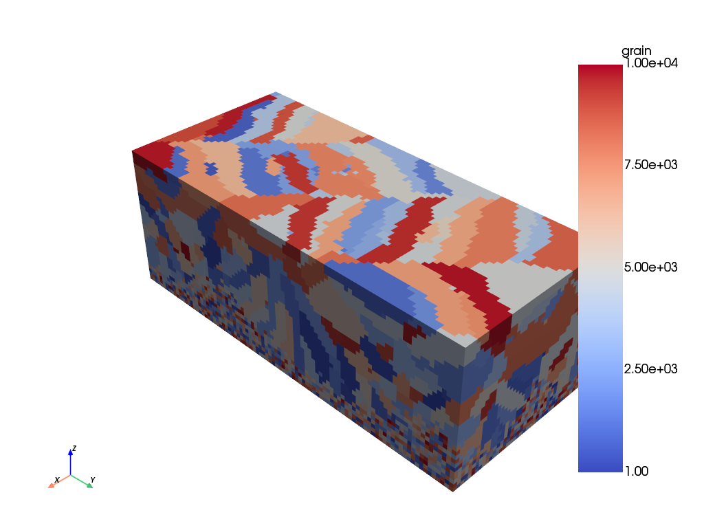
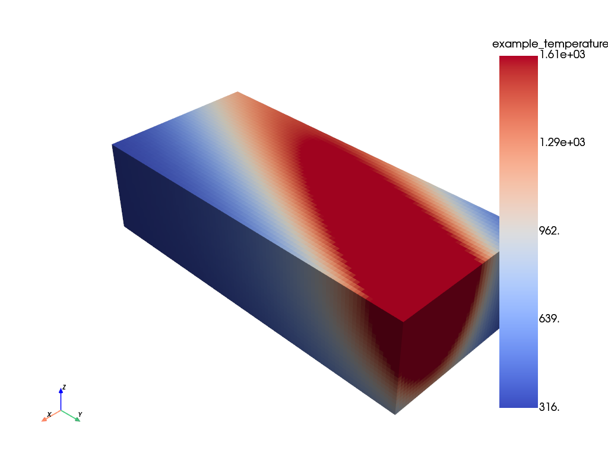

Rosenthal solidification demo#
Simulate an AM build using RosenthalSolidificationModel.
from materialite import Material
from materialite.models import RosenthalSolidificationModel
from materialite.models.laser_path import LaserPath
Create a Material with an initially random field of grain IDs. The voxel size is 5 microns. RosenthalSolidificationModel expects a field with the name “grain” to be in the Material representing the initial grain ID of each voxel.
material = Material(
spacing=[5.0e-6, 5.0e-6, 5.0e-6], dimensions=[40, 90, 33]
).create_random_integer_field("grain", 1, 10000)
Create a two-layer LaserPath. The scan rotation is 67 degrees, and the layer thickness is 40 microns. The z_height of the first layer and the end_offset ensure that the melt pool does not extend beyond the bottom of the domain, and the melt pool moves out of the domain before the end of a scan.
hatch_spacing = 110.0e-6
time_between_scans = 1.0e-5
path_inputs = {
"x_bounds": [material.origin[0], material.sizes[0]],
"y_bounds": [material.origin[1], material.sizes[1]],
"hatch_spacing": hatch_spacing,
"velocity": 0.96,
"power": 285.0,
"end_offset": 900.0e-6,
"domain_offset": hatch_spacing / 2,
"delay_between_scans": time_between_scans,
}
path1 = LaserPath.angled_raster_scan(angle=67.0, z_height=120.0e-6, **path_inputs)
path2 = LaserPath.angled_raster_scan(
angle=134.0,
z_height=160.0e-6,
start_time=path1.total_time + time_between_scans,
**path_inputs
)
laser_path = LaserPath.from_list([path1, path2])
Use a set of properties intended to represent Inconel 625. The time step duration ensures that the laser does not “jump” more than one voxel length. The output times tell the model to store the temperature field and grain IDs at the halfway point of each scan. The temperature field and grain IDs at the end of the simulation are also stored automatically.
time_step_duration = 5.2e-6
output_times = (
laser_path.end_times - laser_path.start_times
) / 2 + laser_path.start_times
thermophysical_properties = {
"conductivity": 29.6,
"diffusivity": 4.79e-6,
"absorptivity": 0.46,
"melt_temperature": 1609.0,
}
solidification_properties = {"prefactor": 1.2e-5, "exponent": 2.6}
initial_temperature = 300.0
process_model = RosenthalSolidificationModel(
laser_path=laser_path,
initial_temperature=300.0,
thermophysical_properties=thermophysical_properties,
solidification_properties=solidification_properties,
time_step_duration=time_step_duration,
output_times=output_times,
)
material = material.run(process_model)
0%| | 0/2257 [00:00<?, ?it/s]
0%| | 1/2257 [00:00<33:15, 1.13it/s]
1%|▌ | 15/2257 [00:00<01:50, 20.37it/s]
1%|█▏ | 29/2257 [00:01<00:56, 39.77it/s]
2%|█▋ | 43/2257 [00:01<00:37, 58.38it/s]
3%|██▏ | 57/2257 [00:01<00:29, 75.06it/s]
3%|██▊ | 70/2257 [00:01<00:25, 87.24it/s]
4%|███▎ | 83/2257 [00:01<00:22, 97.67it/s]
4%|███▋ | 96/2257 [00:01<00:20, 105.97it/s]
5%|████▏ | 110/2257 [00:01<00:18, 113.64it/s]
5%|████▋ | 123/2257 [00:01<00:18, 115.56it/s]
6%|█████▏ | 136/2257 [00:01<00:17, 118.39it/s]
7%|█████▋ | 149/2257 [00:02<00:17, 119.89it/s]
7%|██████▏ | 162/2257 [00:02<00:17, 120.25it/s]
8%|██████▋ | 175/2257 [00:02<00:17, 120.40it/s]
8%|███████▏ | 188/2257 [00:02<00:17, 121.25it/s]
9%|███████▋ | 201/2257 [00:02<00:17, 120.55it/s]
9%|████████▏ | 214/2257 [00:02<00:17, 116.76it/s]
10%|████████▋ | 226/2257 [00:02<00:17, 117.04it/s]
11%|█████████▏ | 238/2257 [00:02<00:18, 112.03it/s]
11%|█████████▋ | 250/2257 [00:02<00:19, 105.30it/s]
12%|██████████ | 261/2257 [00:03<00:19, 100.07it/s]
12%|██████████▍ | 272/2257 [00:03<00:19, 100.73it/s]
13%|██████████▉ | 283/2257 [00:03<00:19, 101.06it/s]
13%|███████████▎ | 294/2257 [00:03<00:19, 101.49it/s]
14%|███████████▊ | 305/2257 [00:03<00:19, 102.44it/s]
14%|████████████▏ | 316/2257 [00:03<00:18, 104.34it/s]
14%|████████████▌ | 327/2257 [00:03<00:18, 105.05it/s]
15%|█████████████ | 338/2257 [00:03<00:18, 104.84it/s]
15%|█████████████▍ | 349/2257 [00:03<00:18, 103.35it/s]
16%|█████████████▉ | 360/2257 [00:04<00:18, 101.80it/s]
16%|██████████████▍ | 371/2257 [00:04<00:19, 98.56it/s]
17%|██████████████▊ | 381/2257 [00:04<00:19, 98.41it/s]
17%|███████████████▏ | 391/2257 [00:04<00:19, 98.06it/s]
18%|███████████████▋ | 402/2257 [00:04<00:18, 98.91it/s]
18%|███████████████▉ | 413/2257 [00:04<00:18, 100.19it/s]
19%|████████████████▎ | 424/2257 [00:04<00:17, 102.47it/s]
19%|████████████████▊ | 435/2257 [00:04<00:17, 104.35it/s]
20%|█████████████████▏ | 447/2257 [00:04<00:17, 106.44it/s]
20%|█████████████████▋ | 459/2257 [00:04<00:16, 109.16it/s]
21%|██████████████████▏ | 471/2257 [00:05<00:15, 112.03it/s]
21%|██████████████████▋ | 484/2257 [00:05<00:15, 114.96it/s]
22%|███████████████████▏ | 497/2257 [00:05<00:14, 118.05it/s]
23%|███████████████████▋ | 512/2257 [00:05<00:13, 125.26it/s]
23%|████████████████████▏ | 525/2257 [00:05<00:14, 123.45it/s]
24%|████████████████████▋ | 538/2257 [00:05<00:14, 121.24it/s]
24%|█████████████████████▏ | 551/2257 [00:05<00:14, 118.91it/s]
25%|█████████████████████▋ | 563/2257 [00:05<00:14, 118.19it/s]
25%|██████████████████████▏ | 575/2257 [00:05<00:14, 116.97it/s]
26%|██████████████████████▋ | 587/2257 [00:06<00:14, 116.36it/s]
27%|███████████████████████ | 599/2257 [00:06<00:14, 114.33it/s]
27%|███████████████████████▌ | 611/2257 [00:06<00:14, 111.61it/s]
28%|████████████████████████ | 623/2257 [00:06<00:14, 109.56it/s]
28%|████████████████████████▍ | 634/2257 [00:06<00:15, 107.60it/s]
29%|████████████████████████▊ | 645/2257 [00:06<00:15, 105.53it/s]
29%|█████████████████████████▎ | 656/2257 [00:06<00:15, 102.18it/s]
30%|█████████████████████████▋ | 667/2257 [00:06<00:15, 101.16it/s]
30%|██████████████████████████▏ | 678/2257 [00:06<00:15, 100.85it/s]
31%|██████████████████████████▌ | 689/2257 [00:07<00:15, 102.16it/s]
31%|██████████████████████████▉ | 700/2257 [00:07<00:15, 103.71it/s]
32%|███████████████████████████▍ | 712/2257 [00:07<00:14, 106.36it/s]
32%|███████████████████████████▉ | 724/2257 [00:07<00:14, 109.10it/s]
33%|████████████████████████████▍ | 737/2257 [00:07<00:13, 113.10it/s]
33%|████████████████████████████▉ | 750/2257 [00:07<00:13, 115.77it/s]
34%|█████████████████████████████▍ | 763/2257 [00:07<00:12, 117.79it/s]
34%|█████████████████████████████▉ | 776/2257 [00:07<00:12, 118.95it/s]
35%|██████████████████████████████▍ | 789/2257 [00:07<00:12, 119.91it/s]
36%|██████████████████████████████▉ | 804/2257 [00:07<00:11, 126.67it/s]
36%|███████████████████████████████▍ | 817/2257 [00:08<00:11, 126.45it/s]
37%|███████████████████████████████▉ | 830/2257 [00:08<00:11, 125.12it/s]
37%|████████████████████████████████▍ | 843/2257 [00:08<00:11, 125.42it/s]
38%|████████████████████████████████▉ | 856/2257 [00:08<00:11, 126.19it/s]
39%|█████████████████████████████████▍ | 869/2257 [00:08<00:11, 125.82it/s]
39%|█████████████████████████████████▉ | 882/2257 [00:08<00:11, 123.87it/s]
40%|██████████████████████████████████▍ | 895/2257 [00:08<00:11, 122.74it/s]
40%|███████████████████████████████████ | 908/2257 [00:08<00:11, 121.47it/s]
41%|███████████████████████████████████▌ | 921/2257 [00:08<00:11, 119.84it/s]
41%|███████████████████████████████████▉ | 933/2257 [00:09<00:11, 119.74it/s]
42%|████████████████████████████████████▍ | 946/2257 [00:09<00:10, 121.78it/s]
43%|█████████████████████████████████████ | 960/2257 [00:09<00:10, 124.65it/s]
43%|█████████████████████████████████████▌ | 974/2257 [00:09<00:10, 126.66it/s]
44%|██████████████████████████████████████ | 988/2257 [00:09<00:09, 128.77it/s]
44%|██████████████████████████████████████▏ | 1002/2257 [00:09<00:09, 130.68it/s]
45%|██████████████████████████████████████▋ | 1016/2257 [00:09<00:09, 131.58it/s]
46%|███████████████████████████████████████▏ | 1030/2257 [00:09<00:09, 133.37it/s]
46%|███████████████████████████████████████▊ | 1046/2257 [00:09<00:08, 140.98it/s]
47%|████████████████████████████████████████▍ | 1061/2257 [00:09<00:08, 137.01it/s]
48%|████████████████████████████████████████▉ | 1075/2257 [00:10<00:09, 129.12it/s]
48%|█████████████████████████████████████████▍ | 1089/2257 [00:10<00:09, 128.49it/s]
49%|██████████████████████████████████████████ | 1103/2257 [00:10<00:09, 128.05it/s]
49%|██████████████████████████████████████████▌ | 1116/2257 [00:10<00:09, 124.99it/s]
50%|███████████████████████████████████████████ | 1129/2257 [00:10<00:09, 123.88it/s]
51%|███████████████████████████████████████████▌ | 1142/2257 [00:10<00:08, 125.05it/s]
51%|████████████████████████████████████████████ | 1155/2257 [00:10<00:08, 125.81it/s]
52%|████████████████████████████████████████████▌ | 1169/2257 [00:10<00:08, 128.39it/s]
52%|█████████████████████████████████████████████ | 1183/2257 [00:10<00:08, 130.48it/s]
53%|█████████████████████████████████████████████▌ | 1197/2257 [00:11<00:08, 131.05it/s]
54%|██████████████████████████████████████████████▏ | 1211/2257 [00:11<00:07, 132.80it/s]
54%|██████████████████████████████████████████████▋ | 1225/2257 [00:11<00:07, 134.48it/s]
55%|███████████████████████████████████████████████▏ | 1239/2257 [00:11<00:07, 136.00it/s]
56%|███████████████████████████████████████████████▊ | 1255/2257 [00:11<00:07, 141.03it/s]
56%|████████████████████████████████████████████████▍ | 1270/2257 [00:11<00:07, 139.68it/s]
57%|████████████████████████████████████████████████▉ | 1284/2257 [00:11<00:06, 139.27it/s]
58%|█████████████████████████████████████████████████▍ | 1298/2257 [00:11<00:06, 139.29it/s]
58%|█████████████████████████████████████████████████▉ | 1312/2257 [00:11<00:06, 138.47it/s]
59%|██████████████████████████████████████████████████▌ | 1326/2257 [00:11<00:06, 137.80it/s]
59%|███████████████████████████████████████████████████ | 1340/2257 [00:12<00:06, 135.66it/s]
60%|███████████████████████████████████████████████████▌ | 1354/2257 [00:12<00:06, 132.61it/s]
61%|████████████████████████████████████████████████████▏ | 1368/2257 [00:12<00:06, 128.93it/s]
61%|████████████████████████████████████████████████████▌ | 1381/2257 [00:12<00:07, 123.66it/s]
62%|█████████████████████████████████████████████████████ | 1394/2257 [00:12<00:07, 122.62it/s]
62%|█████████████████████████████████████████████████████▌ | 1407/2257 [00:12<00:06, 123.50it/s]
63%|██████████████████████████████████████████████████████ | 1420/2257 [00:12<00:06, 124.49it/s]
64%|██████████████████████████████████████████████████████▋ | 1434/2257 [00:12<00:06, 128.69it/s]
64%|███████████████████████████████████████████████████████▏ | 1449/2257 [00:12<00:06, 133.01it/s]
65%|███████████████████████████████████████████████████████▋ | 1463/2257 [00:13<00:05, 134.78it/s]
65%|████████████████████████████████████████████████████████▎ | 1477/2257 [00:13<00:05, 135.61it/s]
66%|████████████████████████████████████████████████████████▊ | 1491/2257 [00:13<00:05, 136.04it/s]
67%|█████████████████████████████████████████████████████████▎ | 1505/2257 [00:13<00:05, 133.93it/s]
67%|█████████████████████████████████████████████████████████▉ | 1521/2257 [00:13<00:05, 138.40it/s]
68%|██████████████████████████████████████████████████████████▌ | 1536/2257 [00:13<00:05, 138.95it/s]
69%|███████████████████████████████████████████████████████████ | 1550/2257 [00:13<00:05, 139.16it/s]
69%|███████████████████████████████████████████████████████████▋ | 1565/2257 [00:13<00:04, 138.95it/s]
70%|████████████████████████████████████████████████████████████▏ | 1579/2257 [00:13<00:05, 135.54it/s]
71%|████████████████████████████████████████████████████████████▋ | 1593/2257 [00:14<00:05, 130.00it/s]
71%|█████████████████████████████████████████████████████████████▏ | 1607/2257 [00:14<00:05, 128.19it/s]
72%|█████████████████████████████████████████████████████████████▋ | 1620/2257 [00:14<00:05, 124.16it/s]
72%|██████████████████████████████████████████████████████████████▏ | 1633/2257 [00:14<00:05, 120.87it/s]
73%|██████████████████████████████████████████████████████████████▋ | 1646/2257 [00:14<00:05, 118.39it/s]
73%|███████████████████████████████████████████████████████████████▏ | 1658/2257 [00:14<00:05, 117.84it/s]
74%|███████████████████████████████████████████████████████████████▋ | 1671/2257 [00:14<00:04, 118.79it/s]
75%|████████████████████████████████████████████████████████████████▏ | 1684/2257 [00:14<00:04, 119.57it/s]
75%|████████████████████████████████████████████████████████████████▋ | 1697/2257 [00:14<00:04, 121.31it/s]
76%|█████████████████████████████████████████████████████████████████▏ | 1711/2257 [00:14<00:04, 126.26it/s]
76%|█████████████████████████████████████████████████████████████████▋ | 1725/2257 [00:15<00:04, 129.33it/s]
77%|██████████████████████████████████████████████████████████████████▎ | 1739/2257 [00:15<00:03, 131.43it/s]
78%|██████████████████████████████████████████████████████████████████▊ | 1753/2257 [00:15<00:03, 133.59it/s]
78%|███████████████████████████████████████████████████████████████████▎ | 1768/2257 [00:15<00:03, 136.42it/s]
79%|████████████████████████████████████████████████████████████████████ | 1785/2257 [00:15<00:03, 143.58it/s]
80%|████████████████████████████████████████████████████████████████████▌ | 1800/2257 [00:15<00:03, 139.30it/s]
80%|█████████████████████████████████████████████████████████████████████ | 1814/2257 [00:15<00:03, 138.16it/s]
81%|█████████████████████████████████████████████████████████████████████▋ | 1828/2257 [00:15<00:03, 137.61it/s]
82%|██████████████████████████████████████████████████████████████████████▏ | 1842/2257 [00:15<00:03, 136.59it/s]
82%|██████████████████████████████████████████████████████████████████████▋ | 1856/2257 [00:16<00:02, 136.31it/s]
83%|███████████████████████████████████████████████████████████████████████▎ | 1870/2257 [00:16<00:02, 133.69it/s]
83%|███████████████████████████████████████████████████████████████████████▊ | 1884/2257 [00:16<00:02, 127.87it/s]
84%|████████████████████████████████████████████████████████████████████████▎ | 1897/2257 [00:16<00:02, 122.47it/s]
85%|████████████████████████████████████████████████████████████████████████▊ | 1910/2257 [00:16<00:02, 119.29it/s]
85%|█████████████████████████████████████████████████████████████████████████▏ | 1922/2257 [00:16<00:02, 116.32it/s]
86%|█████████████████████████████████████████████████████████████████████████▋ | 1934/2257 [00:16<00:02, 116.63it/s]
86%|██████████████████████████████████████████████████████████████████████████▏ | 1946/2257 [00:16<00:02, 117.51it/s]
87%|██████████████████████████████████████████████████████████████████████████▋ | 1959/2257 [00:16<00:02, 120.28it/s]
87%|███████████████████████████████████████████████████████████████████████████▏ | 1973/2257 [00:17<00:02, 124.20it/s]
88%|███████████████████████████████████████████████████████████████████████████▋ | 1986/2257 [00:17<00:02, 124.74it/s]
89%|████████████████████████████████████████████████████████████████████████████▏ | 1999/2257 [00:17<00:02, 125.46it/s]
89%|████████████████████████████████████████████████████████████████████████████▋ | 2012/2257 [00:17<00:01, 126.61it/s]
90%|█████████████████████████████████████████████████████████████████████████████▏ | 2025/2257 [00:17<00:01, 126.27it/s]
90%|█████████████████████████████████████████████████████████████████████████████▋ | 2038/2257 [00:17<00:01, 126.59it/s]
91%|██████████████████████████████████████████████████████████████████████████████▏ | 2053/2257 [00:17<00:01, 132.91it/s]
92%|██████████████████████████████████████████████████████████████████████████████▊ | 2067/2257 [00:17<00:01, 110.35it/s]
92%|████████████████████████████████████████████████████████████████████████████████▏ | 2079/2257 [00:17<00:01, 97.48it/s]
93%|████████████████████████████████████████████████████████████████████████████████▌ | 2090/2257 [00:18<00:01, 93.85it/s]
93%|████████████████████████████████████████████████████████████████████████████████▉ | 2100/2257 [00:18<00:01, 93.63it/s]
94%|█████████████████████████████████████████████████████████████████████████████████▎ | 2111/2257 [00:18<00:01, 96.58it/s]
94%|█████████████████████████████████████████████████████████████████████████████████▊ | 2122/2257 [00:18<00:01, 99.10it/s]
95%|█████████████████████████████████████████████████████████████████████████████████▎ | 2133/2257 [00:18<00:01, 101.24it/s]
95%|█████████████████████████████████████████████████████████████████████████████████▋ | 2145/2257 [00:18<00:01, 105.45it/s]
96%|██████████████████████████████████████████████████████████████████████████████████▏ | 2156/2257 [00:18<00:00, 105.51it/s]
96%|██████████████████████████████████████████████████████████████████████████████████▋ | 2170/2257 [00:18<00:00, 114.14it/s]
97%|███████████████████████████████████████████████████████████████████████████████████▏ | 2184/2257 [00:18<00:00, 121.24it/s]
97%|███████████████████████████████████████████████████████████████████████████████████▊ | 2199/2257 [00:19<00:00, 127.30it/s]
98%|████████████████████████████████████████████████████████████████████████████████████▎ | 2214/2257 [00:19<00:00, 132.92it/s]
99%|████████████████████████████████████████████████████████████████████████████████████▉ | 2228/2257 [00:19<00:00, 134.06it/s]
99%|█████████████████████████████████████████████████████████████████████████████████████▍| 2243/2257 [00:19<00:00, 137.52it/s]
100%|██████████████████████████████████████████████████████████████████████████████████████| 2257/2257 [00:19<00:00, 116.10it/s]
Plot the final grain structure. There are unmelted areas in the bottom of the domain that the melt pool did not reach during the first layer. The grain structure at the top of the domain shows clear evidence of the scan directions.
material.plot("grain")

Plot the temperature field during a scan in the first layer. The temperature is capped at the melting temperature.
example_temperature = material.extract("temperature")[:, 2].components
material.create_fields({"example_temperature": example_temperature}).crop(
z=[0, 120.0e-6]
).plot("example_temperature")

The Material has “temperature”, “grain”, and “grain_history” fields with simulation results.
material.get_fields()
| x | y | z | x_id | y_id | z_id | grain | temperature | grain_history | |
|---|---|---|---|---|---|---|---|---|---|
| 0 | 0.000000 | 0.000000 | 0.000000 | 0 | 0 | 0 | 5608 | [Scalar(347.9156278100713, dims: (), component... | [Scalar(5608.0, dims: (), components shape: ()... |
| 1 | 0.000000 | 0.000000 | 0.000005 | 0 | 0 | 1 | 703 | [Scalar(349.66077854966665, dims: (), componen... | [Scalar(703.0, dims: (), components shape: ())... |
| 2 | 0.000000 | 0.000000 | 0.000010 | 0 | 0 | 2 | 4851 | [Scalar(351.39222004562305, dims: (), componen... | [Scalar(4851.0, dims: (), components shape: ()... |
| 3 | 0.000000 | 0.000000 | 0.000015 | 0 | 0 | 3 | 7422 | [Scalar(353.10404886565226, dims: (), componen... | [Scalar(7422.0, dims: (), components shape: ()... |
| 4 | 0.000000 | 0.000000 | 0.000020 | 0 | 0 | 4 | 964 | [Scalar(354.79024283087375, dims: (), componen... | [Scalar(964.0, dims: (), components shape: ())... |
| ... | ... | ... | ... | ... | ... | ... | ... | ... | ... |
| 118795 | 0.000195 | 0.000445 | 0.000140 | 39 | 89 | 28 | 1848 | [Scalar(300.0, dims: (), components shape: ())... | [Scalar(8878.0, dims: (), components shape: ()... |
| 118796 | 0.000195 | 0.000445 | 0.000145 | 39 | 89 | 29 | 4574 | [Scalar(300.0, dims: (), components shape: ())... | [Scalar(7504.0, dims: (), components shape: ()... |
| 118797 | 0.000195 | 0.000445 | 0.000150 | 39 | 89 | 30 | 4574 | [Scalar(300.0, dims: (), components shape: ())... | [Scalar(175.0, dims: (), components shape: ())... |
| 118798 | 0.000195 | 0.000445 | 0.000155 | 39 | 89 | 31 | 4574 | [Scalar(300.0, dims: (), components shape: ())... | [Scalar(5185.0, dims: (), components shape: ()... |
| 118799 | 0.000195 | 0.000445 | 0.000160 | 39 | 89 | 32 | 4574 | [Scalar(300.0, dims: (), components shape: ())... | [Scalar(2312.0, dims: (), components shape: ()... |
118800 rows × 9 columns
The temperature field is stored as a Materialite Scalar object with a points dimension and a time dimension. This contains the pointwise temperature history at the output_times provided to the model, as well as the end of the simulation if it was not included in the list of output_times.
material.extract("temperature")
Scalar([[347.91562781 650.06405026 917.57916346 ... 415.00128463 850.01758562
300. ]
[349.66077855 682.15848018 936.89215222 ... 422.30976633 885.7079447
300. ]
[351.39222005 715.76049621 955.95735156 ... 429.83848853 922.52136212
300. ]
...
[300. 300. 300. ... 300.28990836 300.00000002
300. ]
[300. 300. 300. ... 300.29046794 300.00000002
300. ]
[300. 300. 300. ... 300.29065471 300.00000002
300. ]], dims: (points, time), components shape: (118800, 10))
The “grain” field contains the grain IDs at the end of the simulation. The “grain_history” field contains the grain IDs at each of the output_times (and the end of the simulation) as a Materialite Scalar object, just like the “temperature” field. The reason for the two separate grain fields is that it is often useful to have a field containing only the current grain IDs for subsequent operations (e.g., adding orientations, visualizing an IPF map, and setting up a mechanical simulation).
material.extract("grain_history")
Scalar([[5608. 5608. 5608. ... 5608. 5608. 5608.]
[ 703. 703. 703. ... 703. 703. 703.]
[4851. 4851. 4851. ... 4851. 4851. 4851.]
...
[ 175. 175. 175. ... 4574. 4574. 4574.]
[5185. 5185. 5185. ... 4574. 4574. 4574.]
[2312. 2312. 2312. ... 4574. 4574. 4574.]], dims: (points, time), components shape: (118800, 10))
material.extract("grain")
array([5608, 703, 4851, ..., 4574, 4574, 4574], shape=(118800,))